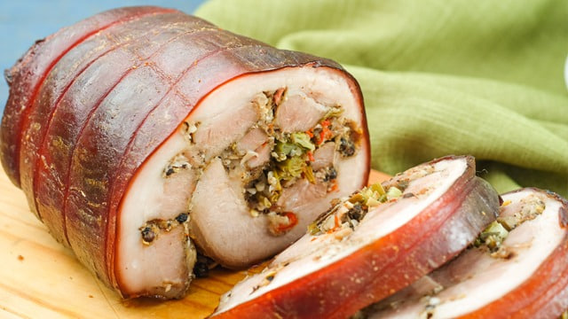

Central Visayas
Cebu Lechon Belly
Cebu Lechon is arguably the most famous roasted pig in the Philippines, originating from Cebu. What sets it apart from other lechon variations is that it is heavily stuffed with a fragrant mix of star anise, lemongrass, scallions, garlic, and sometimes chili, infusing the meat with so much flavor from the inside out that it doesn't require the traditional liver sauce (sarsa) to be enjoyed. While traditionally a whole roasted pig, making a "Lechon Belly" roll at home is a popular and accessible alternative.

Gather
Ingredients
- Whole pork belly slab (skin on, boneless)
- Lemongrass (tanglad), stalks pounded
- Garlic, crushed
- Red onions, quartered
- Star anise
- Salt and black pepper
- Soy sauce or milk (for brushing the skin)
- Kitchen twine
Make it
Recipe
- Wash and dry the pork belly slab thoroughly. Score the meat side (not the skin) to help the flavors penetrate.
- Generously rub the meat side with salt and black pepper.
- Lay the lemongrass, spring onions, garlic, red onions, and star anise in the center of the meat side.
- Carefully roll the pork belly so the skin is on the outside, enclosing the herbs and spices inside. Tie it tightly with kitchen twine at 1-inch intervals to secure the roll.
- Prick the skin all over with a sharp skewer or fork. Brush the skin lightly with soy sauce or milk (this helps achieve a nice reddish-brown color).
- Let the rolled belly sit uncovered in the refrigerator overnight to dry out the skin (crucial for crispiness).
- Roast in an oven or turbo broiler at 160°C (320°F) for about 2 to 2.5 hours until the meat is tender.
- Increase the heat to 220°C (425°F) for the last 30-40 minutes to blister and crisp up the skin.
- Rest for 15 minutes before carving. Serve with a spicy vinegar dip.